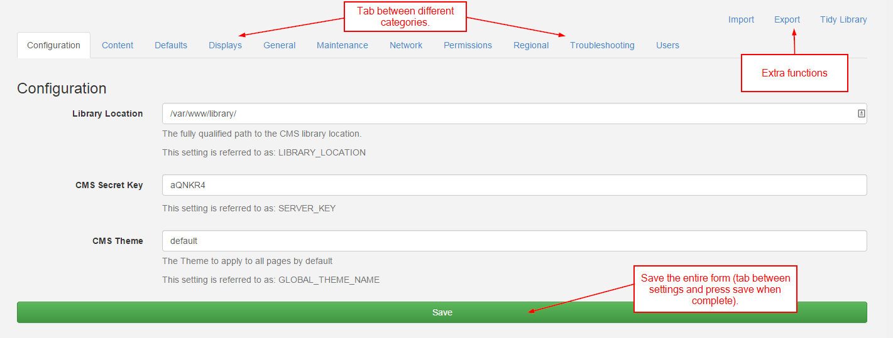

CMS Settings
Like any complex application the Xibo CMS comes with a number of options. These are configured in the Administration menu, Settings sub menu.
The settings are organised into relevant categories which are accessible using the category selector on the left hand side.

Changes to settings can be saved using the Save button in the category selector or at the top of the page.
Categories
The settings are split into related Categories:
Configuration
Essential configuration options that must be set.
Content
Settings for defaulting the durations of certain media items.
Defaults
Settings for defaulting certain form fields to particular selections.
Displays
Settings related to Displays and display management pages.
General
General settings for the behaviour of items in the CMS.
Maintenance
Settings related to the Maintenance Module.
Network
Network settings such as Proxy Server information (if your CMS is behind a proxy)
Permissions
Settings for controlling how permissions effect certain things in the CMS.
Regional
Timezone and Language regional settings.
Troubleshooting
Tab allows you to alter how Xibo handles errors. You can turn the error and audit logs on and off. As logs records size growth rapidly, you should take care to enable it only when necessary e.g. during system debug.
Users
Authentication and Password policy settings.
Notable Settings
User Password Management
This section will take a look at the User Password Management with three features / improvements:
- Users can change their passwords without having access to the user administration page
- Administrators can set a regular expression to test password complexity
- Administrators can override users passwords in a more intuitive way
User Password Policy
This feature has the utmost flexibility given to the administrator to test passwords in which ever way they chose.
This is done with a setting in the Permissions tab called USER_PASSWORD_POLICY.
An administrator can put any valid regular expression in this box, which will cause all users password change requests (and new users) to be tested against this expression.
It is also important for the user to know what the policy actually is; the setting USER_PASSWORD_ERROR which will be presented
to the user when they enter a password that does not validate against the regular expression.
Library Size & Bandwidth
To manage limits on the library file size and monthly bandwidth usage. This is done by virtue of two settings in the database table (LIBRARY_SIZE_LIMIT_KB & MONTHLY_XMDS_TRANSFER_LIMIT_KB).
If no limits are entered in database, everything continues to work without restriction; however once a limit is entered Xibo will start validating against these limits, and when they are exceeded will prevent the upload of new media / updates to clients.
However these two settings are currently not available through the user interface; Only the statistical data is shown in Content page
Maintenance
Maintenance is a very import part of the system and therefore is covered in its own section.
Other functions
The settings page has a set of other functions available in the top right corner of the sub-menu bar.
Import
Import the entire CMS database.
Export
Export the entire CMS database.
Tidy Library
The library tidy function clears up orphaned media items and temporary files. More information can be found in the tidy library section.